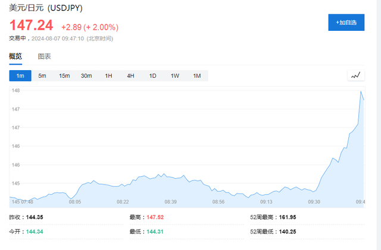

日股带崩全球市场，考验日本央行加息决心，今日日央行高管发表讲话安抚市场。
周三上午9:30，日本央行副行长内田真一将发表讲话并召开新闻发布会，他就自上次会议以来日元的快速上涨、股市暴跌将如何影响日本央行季度展望报告中设想的经济情景发表详细评论。
内田真一安抚市场称：
近期的股市和汇市波动造成了影响，如果市场波动影响到前景展望，那么利率路径将发生转变。
日本央行不会在市场不稳定的时候加息，目前需要坚定地实施宽松政策。
如果前景展望成为现实，将调整宽松程度，利率方面并没有落后于形势，正在带着紧迫感关注市场对经济的影响。
讲话发布后，日元跌破147关口，美元兑日元日内涨幅扩大至2%。日本东证指数涨幅扩大至4%。

值得一提的是，内田真一被视为日本央行加息路径和沟通的策划者，在2月份的一次讲话中，内田提出了日央行如何解除一系列复杂刺激措施的计划，为日本央行一个月后的决定奠定基础。
讲话前夕，日本央行前董事会成员Takahide Kiuchi表示，鉴于最近的市场溃败，内田很可能会传达一个信息，旨在安抚市场对日本央行加息路径的不安情绪。
摩根士丹利此前警告，如果内田保持鹰派立场，不对当前日元和股市走势采取任何控制措施，预计日本股市将进一步下跌，市场预计未来将有更多次加息，而日元套利交易的进一步平仓将推动日元继续上涨。
尽管市场剧烈动荡，观察人士对日本央行利率路径的看法保持不变。媒体周二进行的一项调查显示，34位经济学家中约65%预计年底时政策利率将高于目前的0.25%。约21%称加息可能发生在10月，41%预计在12月。这些预测与8月1日调查的结果基本相符，当天是日本央行加息的次日，也是市场真正开始动荡的前一天。
此外，本月晚些时候，日本央行行长植田和男可能出席日本国会特别会议，讨论日股大跌问题。
Advertisements